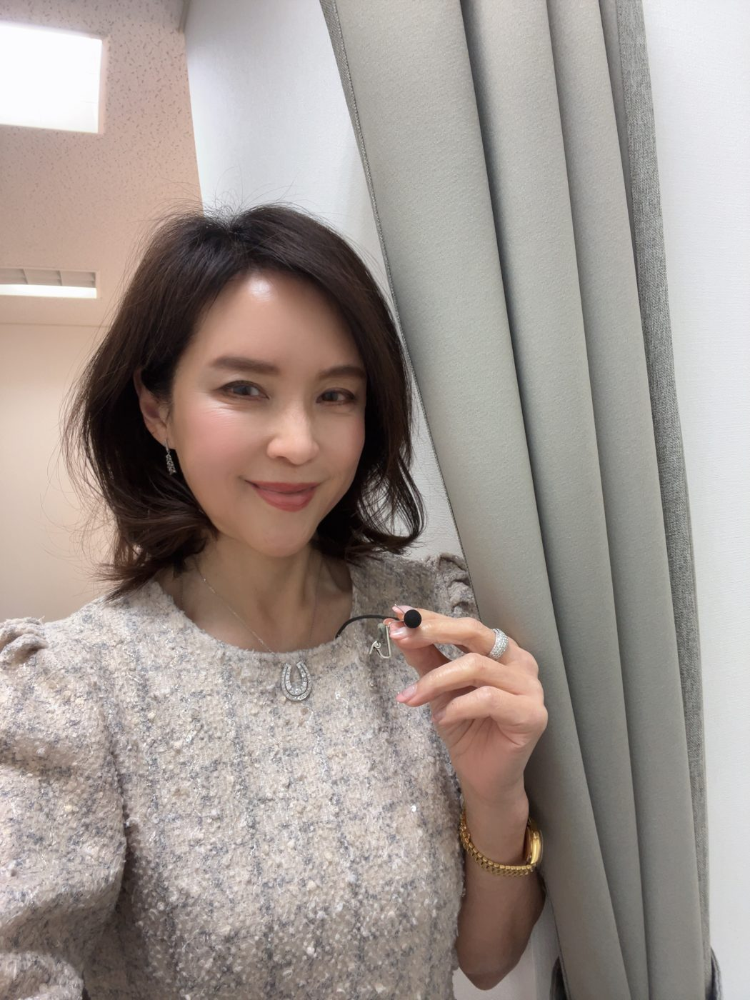

A REAL CHANGE ｜ 変化「私なんて」と言っていた方が、その場の主役に。
たとえば──10年間、引きこもっていた、まりさん（30代）。
人前に出ることも、自分に自信を持つことも、できなかった。それが、所作と立ち居振る舞いを整えていくうちに——「人生が180度、劇的に変わりました」。お見合いの話が一気に増え、出会いも多くなった。いまでは“選ばれる”女性として、堂々と立っています。
変わったのは、性格ではありません。ふるまいです。
まりさん・30代

本の中で、画面の向こうで、ずっと憧れてきたあの品を。その「いつか」を、今日から。育ちは、いつからでも変えられます。
『育ちがいい人』のページをめくった、あの夜。テレビの中の、あの所作の美しさ。
ずっと先生に触れてきたあなたは、もう知っているはずです——どんな人が、あの光の中に立てるのかを。
知っているのに、まだ、自分はガラスの外にいる。その扉を、今日、開きましょう。
憧れながら、こう思っていませんでしたか。「あの世界は、生まれが違う人のもの」「私とは、育ちが違う。到底無理」と。
そうして一歩を踏み出せないまま——同窓会で、あの華やかな女性の隣に立つと、半歩引いてしまう。心のどこかで、羨ましく思いながら、自分のふるまいが、気になる。
お見合いの席や、婚活の場でも。見られているのは器量より“育ち”かもしれないと、ふいに怖くなる。
義実家の食事会でも、わが子のお受験の場面でも、また半歩、引いてしまう。
——憧れは、見ているだけでは、自分のものになりません。
“デビュタント”とは、社交界へ初めて踏み出す女性のこと。ここでは——諏内えみのもとで、品のある世界へ、今日から踏み出すあなた。その一歩を選んだ一期生を、「デビュタント（内弟子）」と呼びます。
このたび2026年9月、諏内えみが、ごく少人数の「デビュタント（内弟子）」を迎えます。本やテレビの向こうにいた諏内えみ先生の、いちばん近くで、3ヶ月、直接師事する。
——ずっと憧れてきたその人のもとで、あの世界の作法を、あなたのものにしていく。それが、デビュタントです。
品は、生まれや才能ではありません。諏内えみが体系化した「育ちがいい人」の振る舞いは、背筋の伸ばし方、お辞儀の角度、椅子への座り方、初対面のひと言目まで、ひとつひとつ再現できる「型」でできています。だから、生まれた家もこれまでの育ちも関係なく、型を受け取り、繰り返した方から、確実に品が身についていきます。——諏内えみの指導は、この「型」を、あなたの体に馴染むまでお渡しすることから始まります。
本を何冊読んでも届かなかった最後の一歩を、ここで越えます。
※ 形式・日程は、確定し次第ここに明記します。
思わず友人が振り返る。今度は、あなたが羨望される番です。
憧れ続けた人と出会える。
親子そろって、品がにじみ出る。
誰よりも堂々と美しく、一目置かれる。
育ちが身につくと、毎日の景色が変わります。憧れのレストランやホテルで、自然と上客として扱われる。同窓会では、場の華に。お見合いや婚活では、1ランク・2ランク上の方と出会える。
そして、その先には——ウィーンの宮殿で開かれる社交界の舞踏会という世界も、待っています。無数のシャンデリア、白いドレス。その夜の主役として、フロアの中央へ。
かつて遠くから見つめていた、あの場面の中に、あなた自身が立つ。それは、夢物語ではありません。今日の小さな一歩から、続いています。
※ウィーンの舞踏会への参加（別料金）について詳しくは、本科の中でお伝えします。
「いつか、先生のように」と思い続けて、何年が過ぎたでしょう。見ているだけなら、その景色は、これからもずっと、ガラスの外。来年も、同じ場所で、半歩引く。
そして、その姿を、いちばん見られたくない相手がいるはずです。ずっと羨んできた、あの女友達かもしれません。
——変わらないことのほうが、本当は、惜しい。
月1万円・出入り自由。まず世界観に触れる入口。
3ヶ月・諏内えみに直接師事。型のすべてと個別添削。
その先の道。さらに深く学ぶ上位ステージ。
「育ち」を受け継ぎ、伝える側へ。
※ 直弟子・襲名は、その先に続く道のご参考です。今回のご案内は「内弟子（デビュタント）」と「見習い（オーディター）」の2つです。
デビュタントは、15名限定のエントリー審査制です。諏内えみ先生が、お一人おひとりを直接見るため。
——これは、ふるい落とすための審査ではありません。ずっと憧れ、本気で変わりたいと願ってきたあなたを、「あなただから」とお迎えするための、お互いの約束です。
諏内えみ。皇室や各界のVIPをお迎えのVIPアテンダントとして品格を磨き、著書『「育ちがいい人」だけが知っていること』（ダイヤモンド社）は、2020年から現在まで最も売れたマナー本に。シリーズは累計70万部を超えました。
テレビ出演はメディア200本超——『世界一受けたい授業』『ホンマでっか!?TV』『王様のブランチ』『あさイチ』『ぐるナイ』ほか多数。雑誌『ゼクシィ』保存版「結婚マナー」を全監修し、各誌にも登場。人気ドラマ・映画で有名女優の所作指導も多数手がけています。登録商標『育ちがいい人®』を持つ、『育ち』の第一人者です。
そんな諏内えみが、なぜ、いま自ら少人数を直接教えるのか。本を書いても、テレビに出ても、いつも心のどこかで思っていました。——文字や画面では、どうしても伝わりきらないものがある、と。手の角度、声の置き方、間（ま）、まなざし。それは、すぐ隣で、お一人おひとりに合わせて、直接お渡しするしかありません。
これまで、何千人もの方が「変われた」瞬間に立ち会ってきました。その方々の喜び溢れるお顔を思い浮かべるたび、もっと近くで、もっと深く伝えたい——その想いが募って、はじめて少人数の「デビュタント」という形にたどり着きました。

たとえば──10年間、引きこもっていた、まりさん（30代）。
人前に出ることも、自分に自信を持つことも、できなかった。それが、所作と立ち居振る舞いを整えていくうちに——「人生が180度、劇的に変わりました」。お見合いの話が一気に増え、出会いも多くなった。いまでは“選ばれる”女性として、堂々と立っています。
変わったのは、性格ではありません。ふるまいです。
人生が180度、劇的に変わりました。
上品、エレガントと褒められるように。ハッとさせる立ち居振る舞いに。
※ 掲載するお写真はデザイン段階で選定します。開講後は一期生のお声を掲載予定です。
途中で不安になられたら、どうぞ諏内えみ先生にご相談ください。理由をうかがい、必要な際は、無料の補講でサポートします。
最後まで、責任を持って伴走する——それが、先生としてのお約束です。
ずっと憧れてきた、その「いつか」。それを「今日」に変えられるのは、あなただけです。
あなたは、ちゃんとしているつもりで、ここまで来ました。ただ、本当の作法を、まだ知らなかっただけ。
——ずっと羨ましく見上げてきた、あの光の中へ。今度は、あなたが、見上げられる側に。
［ボタン］一期生に応募する
※この時点で、お支払いは発生しません。
「今はまだ、デビュタント（内弟子）までは踏み切れない」——その気持ちも、自然です。
まずは月額1万円の「オーディター（見習い）」から、憧れの世界の中に、身を置いてみてください。出入りは自由。あなたのペースで、一歩目を。